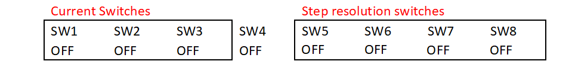

Motor driver configuration
The configuration of the stepper motor driver shown below for the position control corresponds to 25,000 steps per revolution on the motor shaft (150,000 steps per revolution on the rotary table):

NOTE. To control the closed loop response, we have explored how the different configurations of micro-stepping of the driver DM542A match with the internal units of the optical motion sensor. In the case of the ADNS 2610, the measured average number of internal units per revolution is 9,391 and therefore the best micro stepping configuration is 25,000 steps per revolution. We have evaluated the relationship between the number of steps and the sensor internal units in each possible micro-stepping configuration. The number of steps on the big pulley is 150,000 steps with a gear ratio of 6 between the small and big pulley. Therefore, the number of steps per optical sensor unit is 15.97 steps. This configuration is also the most silent and helps reduce vibrations on the platform.
We have used the TeensyStep library [1] which can control stepper motors precisely at high speeds (300,000 steps/s) and accelerations (500,000 steps/s^2). We have implemented a proportional control between the angle measured on the Styrofoam sphere as a set point and the angle of the stepper motor measured from the internal counter of the stepper object using the method stepper.getPosition() [2]. The proportional control uses the method controller.overrideSpeed() to change the rotational speed on the fly.
The encoder can be used to record the position separately or implement closed-loop control using the encoder as a position reference.
The range of speed and acceleration we have tested with the rotary stage vary from 20 to 100 deg/s and 200 to 1200 deg/s^2.
The main loop() execution period on the Teensy 3.5 at 120 MHz is approximately 270 µs therefore the program execution frequency is higher than 3 kHz where the position of the sensor is evaluated and sent to the stepper motor.
Warning
If the speed is increased, the system will tend to overshoot. The proportional constant (kp) of the control algorithm might have to be adjusted to get better performance. Using the kp in our code examples, we always got good results.
References
[1] https://luni64.github.io/TeensyStep/
[2] https://forum.pjrc.com/threads/43491-New-Stepper-Motor-Library/page3